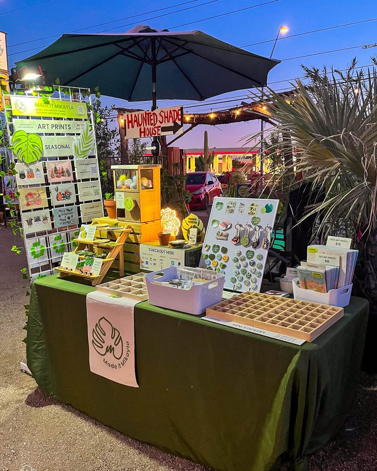

Productos ecológicos • Sustentabilidad • Innovación
Ecobook es un proyecto escolar enfocado en el cuidado del medio ambiente mediante la creación de productos ecológicos elaborados con materiales reciclados y reutilizables.
Elaborada con materiales reciclados y reutilizados. Su diseño busca reducir el consumo de papel nuevo y fomentar hábitos responsables con el medio ambiente.
Bolsillo confeccionado con tela reutilizada que puede contener hierbas aromáticas naturales como lavanda o menta para brindar una experiencia agradable.
Fabricado con materiales biodegradables y reciclados. Algunos modelos incorporan semillas para plantarse después de utilizarse.
Accesorio práctico que ayuda a organizar mejor la libreta mientras mantiene la filosofía ecológica de Ecobook.
Elaborada con ingredientes naturales y presentada en recipientes reutilizados para crear espacios agradables y sostenibles.
Fabricada con cartón reciclado para proteger los productos y reforzar el compromiso ambiental de nuestro proyecto.

Espacio destinado a la exhibición y venta de los productos ecológicos elaborados por el equipo Ecobook.
Grupo comprometido con la elaboración, promoción y comercialización de productos ecológicos para generar un impacto positivo.